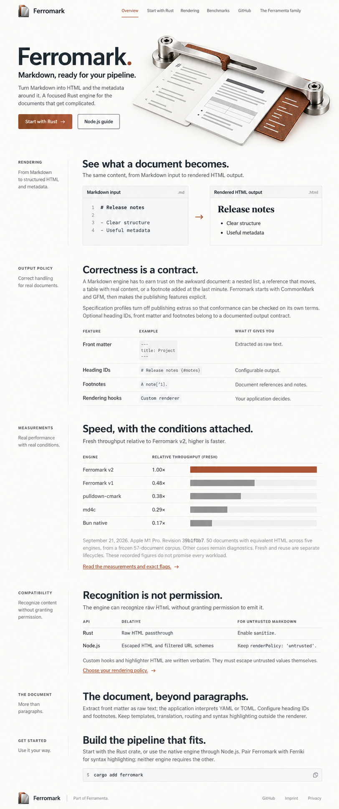

Direction B · Design 31
Ferromark
Working specimen
A precision handbook whose worked examples organize the page, with annotated technical data rather than generic dashboard tables.
Annotated specimens and field ledgers connect examples, output and constraints.

Full-page visual direction, including the actual hero object, representative editorial content and redesigned evidence tables. Read authoritative source copy · Exact prompt and provenance